Relic Botanicals
REVIVE • REFRESH • RELAX
Relic Botanicals is a premium hemp and delta-9 cannabis brand blending ritual, science, and slow-crafted botanicals to create n experience like no other. This case study showcases a full visual system design that may be applied to alternate products. Each product has it's on vibe and the artwork designed was tailored to match. This design is vector based and may be sized for any application, big or small.
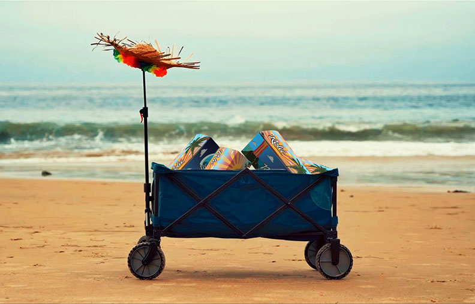
Design Objective
The goal was to create a visual language that feels both fresh and inviting—balancing relic-like textures with clean typography and precise information hierarchy. Every touchpoint needed to communicate trust, ritual, and quiet luxury without losing clarity on dosage, ingredients, and usage. The client required three separate vibes that spoke on behalf of the products and their intended user experience.REVIVE Refresh RELAX
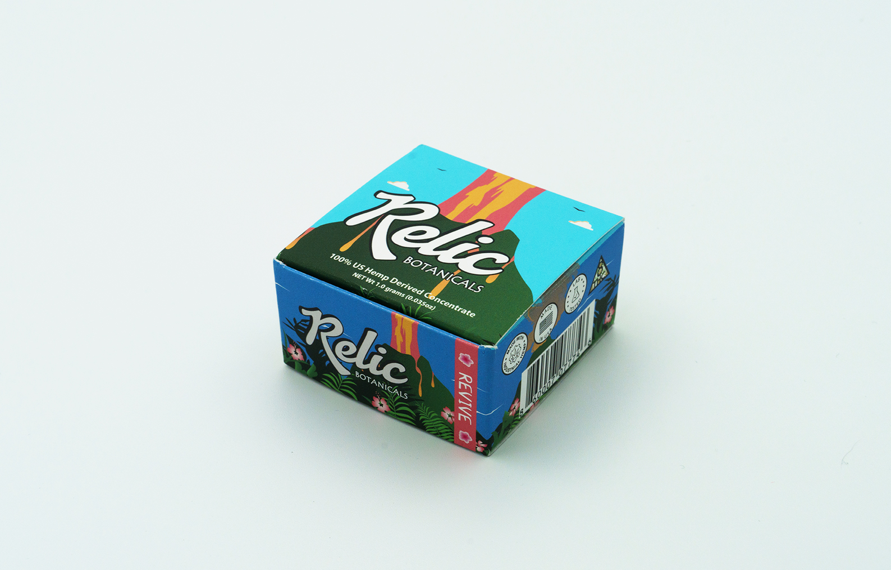
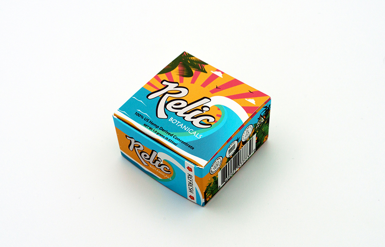
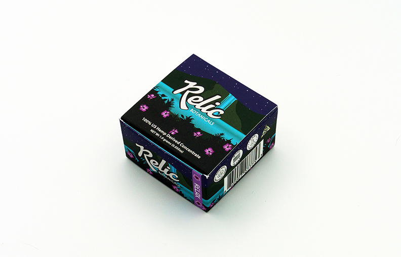
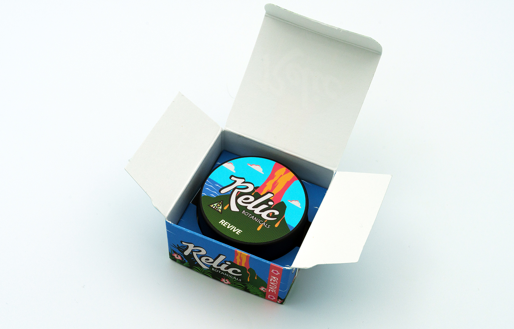
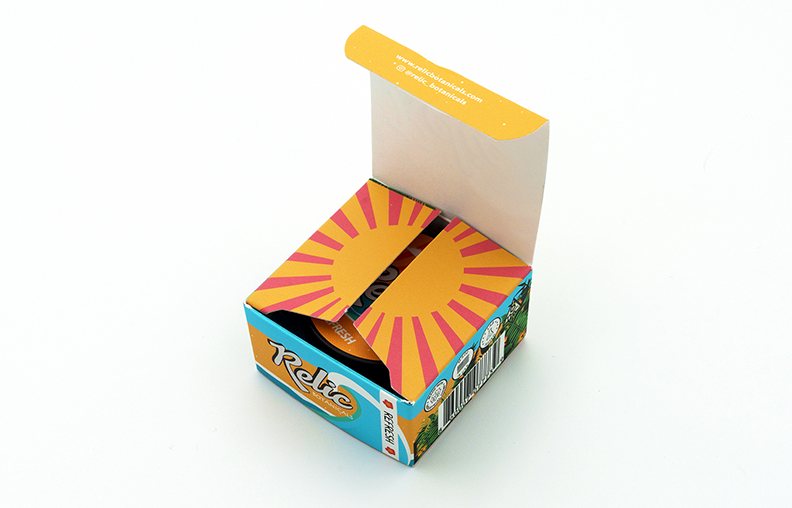
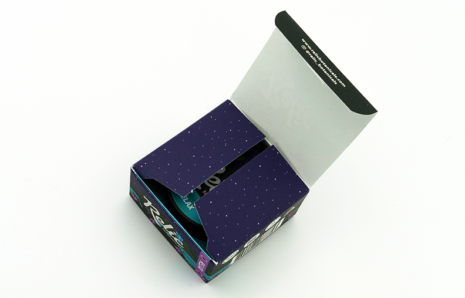
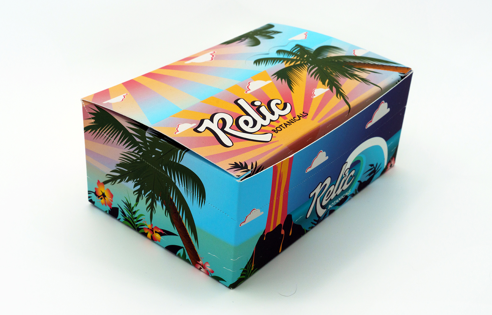
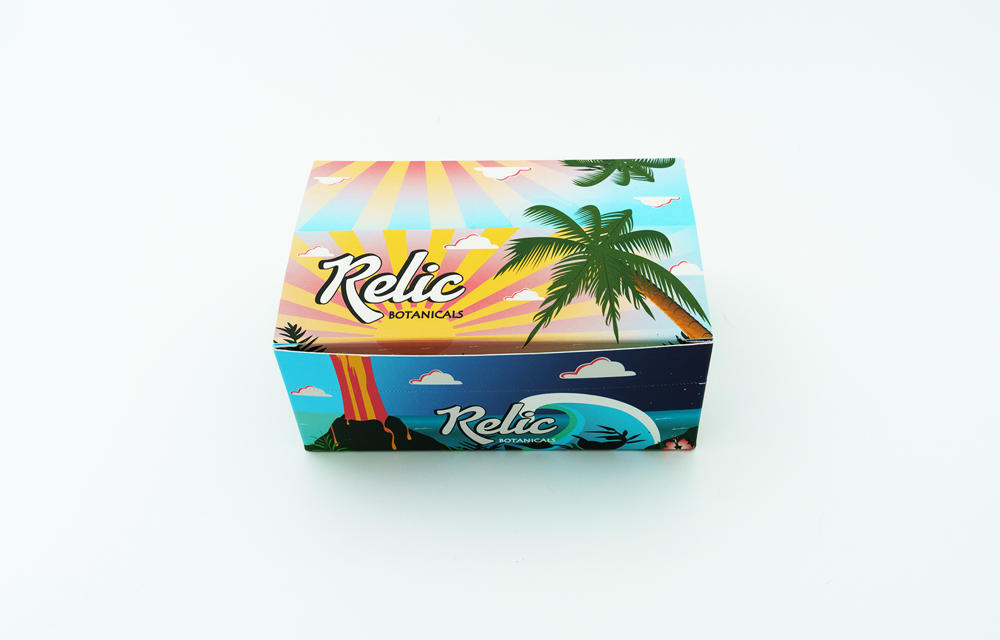
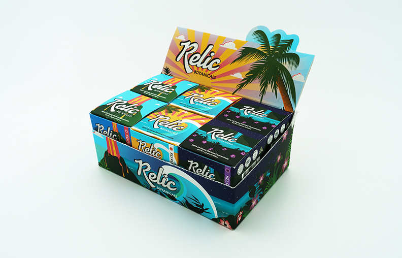
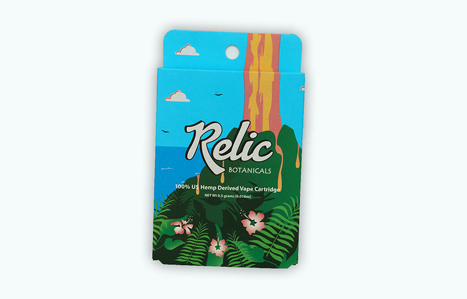
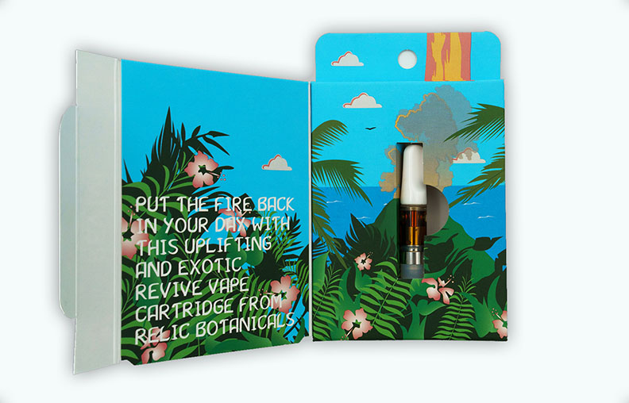
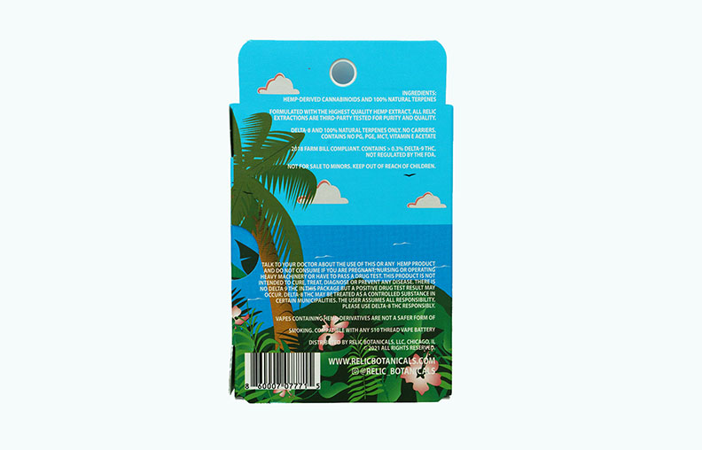
A modular system built to scale across SKUs, formats, and future product lines while maintaining a consistent visual spine and aesthetic beauty.
Packaging & Pre-Press Production
Packaging was engineered with production in mind—ink limits, dielines, and finishing passes were considered from the first sketch. Each panel was built to survive real-world constraints while still feeling like a collector’s object.
Pre-press files were prepared with precise bleed, trapping, and spot color definitions for die cutouts, ensuring the final print matched the digital intent as closely as possible.
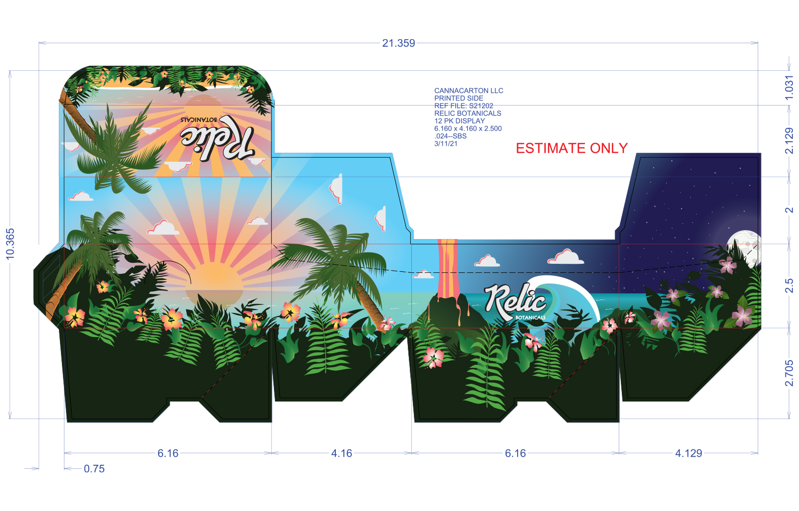
Concentrate packaging
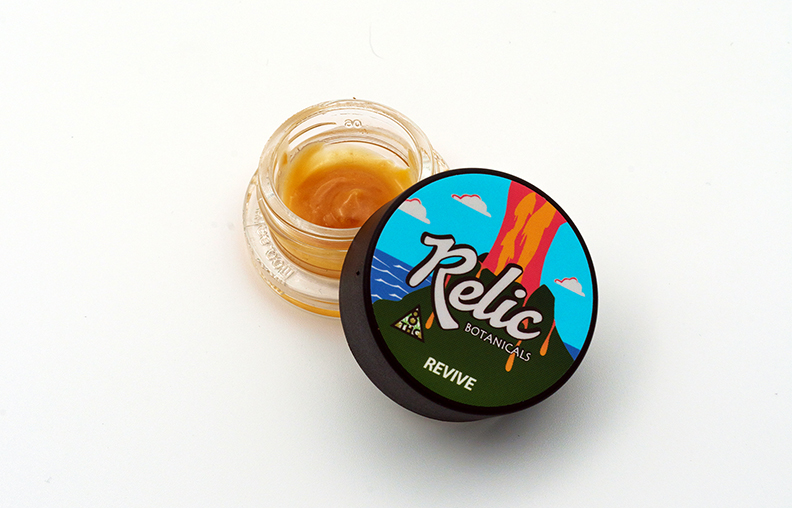

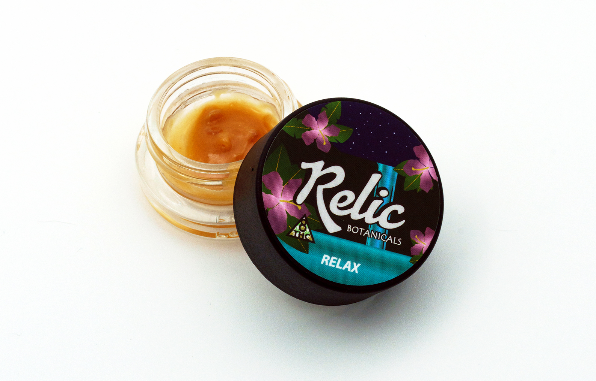
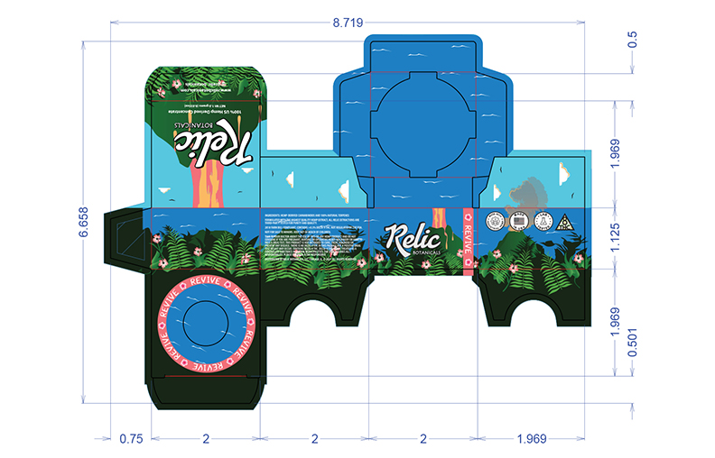
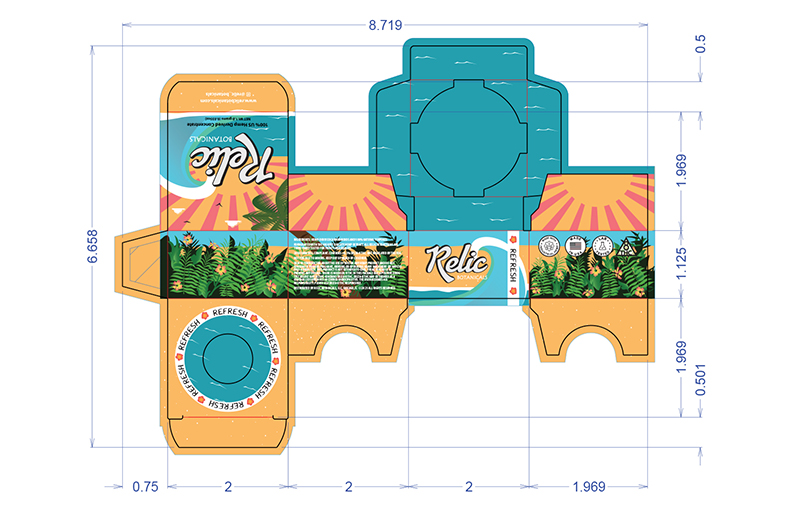
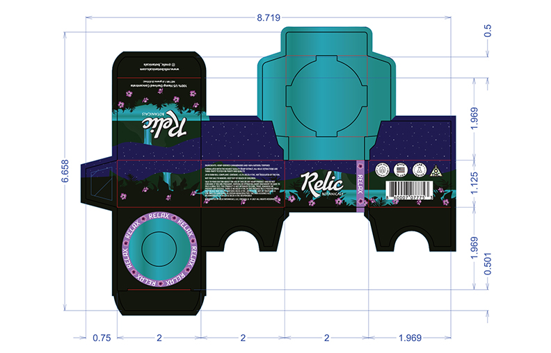
3D renders were art-directed to feel like Hawaiian Americana art—with bright pastels, inviting settings, simple yet detailed illustrations, fully functional, and IL compliant.
Brand Identity System
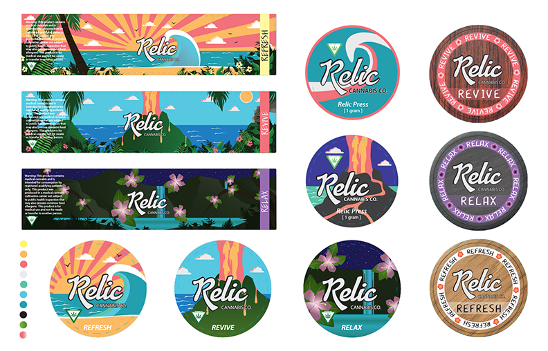
The identity leans on an entire series of vibes that speaks to each of the products. Detailed imagery sets an inviting scene, with a palette of bright colors, pastels, and beautifully structured layout. The result is a brand that feels timeless without leaning on clichés.
Typography and spacing were tuned for both light and dark environments, ensuring legibility on all labels while still feeling cinematic.
If you’d like to build something with this level of intention
click here now to contact me.